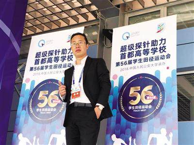

食安链超级探针系统为首都大学生运动会保驾护航
2017.7.7
近日食安链（Ifoods chain）旗下超级探针食品快检系统成为中国人民公安大学承办“第56届首都高校大学生运动会”食品保障合作方，超级探针为大运会顺利举行保驾护航。

首都高等学校学生田径运动会举办于1955年10月，至今已有63年的悠久历史。2018年第56届首届北京高校田径运动会由中国人民公安大学承办，首都70多家高校参加了本次大会。
食安链通过运用结构化食品大数据+智能硬件+区块链技术直观判断食品品质，致力于成为全球食品领域的区块链标准制定者。本次食安链为大会提供的超级探针食品快检系统，具有便携、易操作等特点。使用时，通过与手机Dapp蓝牙连接的硬件超级探针对着食品轻轻一探，高精度传感设备将会检测出食品的各种结构化数据，并将这些数据与食安链在全球采集的结构化食品标准数据库进行对比，通过内置算法，最终60-120秒内告诉使用者食品品质如何。未来对于肉类，海鲜、蔬果未来都能通过这款超级探针快速检测出它们的品质。
能够快速协助使用者直观判断食品品质的背后，却是融合了大量新技术探索开发。据食安链创始人卡隆介绍：“超级探针是基于大数据分析、高精度传感芯片、区块链、庞大结构化食品数据库等新技术研制而成的用于食品快检的智能硬件，在数据可信赖，操作简便、提升效率方面都有不错表现。”
据悉，食安链和中国人民公安大学下属机构双方研究用新食品科技+区块链结合，加大在食品安全领域的落地应用。